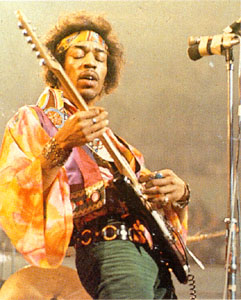

Вот уже больше четверти века его нет. Что обычно оставляет после себя уходящий рок–музыкант? Пластинки, афиши, приятелей, которые тут же становятся друзьями–братьями, интервью, клипы, документальные съемки... Щедрый Джими Хендрикс подарил нам, помимо всего этого, красочную легенду собственной жизни; он — один из немногих мифических персонажей Рок–н–ролла, былинный богатырь, Илья Муромец электрогитары и Геркулес психоделии, основатель, титан и корифей бесчисленного множества стилей, символ конца 60–х годов.

ГИТАРА И ПСЕВДОНИМЫХендрикса часто называют феноменом, учитывая не только его фантастическую технику, но и сам факт внезапного появления великого гитариста из "ниоткуда". На самом же деле взлету Джими предшествовал тернистый путь рядового рокера, пройденный им достойно и честно. Начался этот путь 27 ноября 1942 года, когда Люсиль, супруга солдата американской армии Эла Хендрикса, родила своего первенца Джона Аллена; родным городом гения был Сиэтл в штате Вашингтон. В 1946–м отец мальчика дал ему имя Джеймс Маршалл, Джон превратился в Джима, а через год он впервые взял в руки простенькую акустическую гитару (до этого были губная гармоника и скрипка).
Детство Хендрикса было несладким: родители развелись, школу пришлось оставить. Отец полагал, что из Джима выйдет неплохой художник, но все свободное время непутевый сын уделял гитаре и запиленным пластинкам Би Би Кинга, Мадди Уотерса и Элмора Джеймса. Уже к пятнадцати годам Хендрикс был вполне профессиональным мастером–блюзменом, а его первой серьезной группой стала THOMAS AND THE TOMCATS. Однако вскоре Джима призвали в армию. Служил он в десантных войсках, но после неудачного прыжка с парашютом был демобилизован и начал странническую жизнь вместе с армейским приятелем, басистом Билли Коксом. Приходилось бывать в Нэшвилле, Ванкувере, Кемпбеллтауне, и везде Джим умудрялся играть сразу в нескольких группах, помимо его основного проекта ТНЕ КING KASUALS. Но, видимо, уровень провинциальных блюзовых коллективов его не устраивал, и в феврале 1964 года он приехал покорять Нью–Йорк. Здесь Хендриксу сразу же крупно повезло — его способности оценил известный дуэт THE ISLEY BROTHERS. Джим получил постоянное место в группе сопровождения этих хитмейкеров, а затем его услугами сейшнмена стали наперебой пользоваться Айк и Тина Тернер, Сэм Кук, Кертис Найт, THE SUPREMES и другие звезды раннего соул. Хендриксу страшно не нравилась эта коммерческая музыка, но это был единственный шанс получить известность в американской среде шоу–бизнеса. В конце концов его пригласил в свою группу Литтл Ричард, король черного фортепьянного рок–н–ролла.
Работая с Литтл Ричардом, Хендрикс пользовался псевдонимом Морис Джеймс. Отношения с главой коллектива были нелегкими: взбалмошный и самовлюбленный Литтл Ричард счел, что Хендрикс подражает ему внешне, и всячески третировал своего соло–гитариста. Имидж Литтл Ричарда действительно сильно повлиял на сценический облик Хендрикса второй половины 60–х: он начал выступать в ярких рубашках психоделических расцветок, с лентой в волосах, надевал на шею золотые цепи и кулоны. Но в 1965 году этих новшеств еще никто не ценил, равно как и робкие попытки Джима разнообразить свою гитарную игру, используя фидбэк или, играя, держал "фендер" над головой. Литтл Ричард указал ему на дверь, и вновь наступило "смутное время", когда Хендрикс носился между студиями Перси Следжа, Уилсона Пиккета и дуэта SAM AND DAVE и добросовестно исполнял требуемые простенькие партии. Звезды упорно держали его в тени и часто вменяли в вину "чрезмерную экстравагантность".
В июне 1966 года наконец осуществилась мечта Джима о собственной группе. Он назвал ее THE RAINFLOWERS , а затем переименовал в THE BLUE FLAMES. Изменился и псевдоним гитариста — он стал Джимми Джеймсом. В состав группы вошел совсем еще молодой музыкант Рэнди Вулф, которому Хендрикс придумал прозвище "Калифорния" (затем он основал собственную джаз–роковую команду SPIRIT). Работали THE BLUE FLAMES в захудалых клубах богемного района Нью–Йорка Гринвич–Виллидж. Именно в это время окончательно оформился уникальный саунд гитары Хендрикса. По свидетельству Майка Блумфилда (затем гитарист Paul Butterfield Blues Band и ELECTRIC FLAG), Джим добивался потрясающего звучания с помощью "фендера––стратокастера", усилителя "Туин" и фузз–эффекта.
К нему, наконец, заторопилась известность. В клуб "А–Go–Go", где играл Хендрикс, приходили Боб Дилан, музыканты THE BEATLES и THE ROLLING STONES. Молва о чернокожем парне–левше, выделывающем чудеса с соло–гитарой, непрерывно росла. Однажды одна из подруг Кейта Ричардса посоветовала взглянуть на Хендрикса Чезу Чендлеру, басисту THE ANIMALS, начинавших турне по США. Тот согласился. Был самый конец июля 1966 года.
СОЗДАНИЕ THE JIMI HENDRIX EXPERIENCE
Чендлер к этому времени как раз собирался уйти из своей группы и заняться продюсированием молодых талантов. Джими стал первой его находкой. Кстати, именно Чендлер придумал гитаристу псевдоним "Джими Хендрикс", с которым тот не расставался до смерти.
Опытный музыкант внимательно слушал выступление Хендрикса. Чез сразу понял истинный уровень мастерства гитариста и предложил ему переехать в Лондон. Хендрикс сперва отреагировал сдержанно. Он начал выяснять, как отнесутся к его переезду английские звезды рок–сцены, и лишь после того, как Чендлер пообещал познакомить его с Эриком Клэптоном, дал согласие. 23 сентября 1966 года Джими Хендрикс прибыл в Лондон, где его тепло встретили уже много слышавшие о нем британские коллеги по сцене.
Чез Чендлер и его сотрудник Майк Джеффери довольно скоро подыскали Хендриксу аккомпанирующий состав. Впрочем, это название не совсем верно, так как работать с виртуозом должны были лишь очень одаренные музыканты. Таковыми были Ноэл Дэвид Реддинг и Митч Митчелл, соответственно бас–гитара и ударные. Ноэл был вообще–то соло–гитаристом и поначалу хотел пристроиться к группе Эрика Бердона THE NEW ANIMALS, но когда выяснил, что вакансий нет, взялся за бас. Ударник Митчелл был довольно известен в лондонских музыкальных кругах — он играл в группе Джорджи Фэйма THE BLUE FLAMES, но та в начале 1966–го распалась, и безработный Митч пришелся ко двору в проекте Хендрикса. Назвали его THE JIMI HENDRIX EXPERIENCE. В репертуаре новорожденной группы было три песни, отрепетированных на скорую руку. С ними трио и дебютировало 18 октября 1966 года в парижском зале "Олимпия".
Дела JНЕ поначалу шли неважнецки. Фирма "Decca" отказалась выпускать дебютный сингл, клубы не давали своих площадок; был даже период, когда Чендлеру пришлось продать бас–гитару, чтобы хоть как–то содержать своих подопечных. Но начиная с декабря 1966–го группа стала уверенно набирать обороты. Сингл "Hey Joe", вышедший 16 декабря, занял шестое место в хит–параде (в феврале 1967–го он добрался до четвертого), концерты в клубах 7S и Saville прошли блестяще. Очень помогло Хендриксу доброе отношение музыкантов THE WHO и CREAM, групп, также делавших ставку на энергичный виртуозный гитарный рок. Многие проницательные слушатели Джими утверждали, что его стиль не имеет и не будет иметь аналогов в рок–н–ролле, что это уникальное явление. Столь же уникальной для начала 1967 года была и музыка JНЕ, в которой гармонично и выигрышно сплетались элементы блюза, рока и психоделии. Классический пример — второй сингл Хендрикса "Purple Haze ", изданный 18 марта 1967 года.
В марте, во время гастролей трио по Англии, был придуман "фирменный" сценический трюк Джими — поджигание гитары. Сначала это проделывалось только во время исполнения песни "Fire" ("Огонь"). Чез Чендлер вспоминал, что "когда гитару нужно было поджечь, спички подвели. Джими лежал на спине и чиркал спичками минут пять".
19 мая 1967 года вышел дебютный альбом "Are You Experienced?". Одиннадцать песен, созданных Джими, поражали своей разноплановостью: с типично блюзовой "Red House" соседствовала сюрреалистическая "Love Or Confusion", а с балладой "May This Be Love" — "Are You Experienced?", фантасмагорический заглавный номер, ставший одним из гимнов психоделической эры. Лучшие гитаристы мира — Джефф Бек, Эрик Клэптон, Элвин Ли, Пит Тауншенд — оценили соло Джими на "отлично", барабанщики восхищались чудесной игрой Митча Митчелла. Трио JНЕ было признано третьей по значимости группой Англии, Хендрикс — вторым музыкантом после Клэптона, а альбом разделил первое место c битловским "Сержантом Пеппером". Воодушевленные музыканты ринулись на завоевание остального мира.
ОТ МОНТЕРЕЯ ДО ВУДСТОКА
Почти все биографы сходятся на том, что подлинную суперзвезду из Хендрикса сделал рок–фестиваль в Монтерее (США). Этот праздник музыки собрал представительную аудиторию — выступали Отис Реддинг, Дженис Джоплин, MAMAS AND PAPAS, JEFFERSON AIRPLANE, GRATEFUL DEAD; особенно удалось выступление ТНЕ WНО, которых публика приветствовала восторженным ревом. Но трио Хендрикса затмило всех. Джими, Ноэл и Митч исполнили семь песен (в их числе "Hey Joe", "Purple Haze" и дилановская "Like A Rolling Stone") и буквально повергли слушателей в шок. Хендрикс в оранжевой рубашке и красных брюках беспощадно терзал свою гитару, которая то исступленно завывала, то плакала, то скрипела, то имитировала птичье пение и человеческий голос, забрасывал ее за спину и играл, держа на вытянутых руках; филигранные соло, исполненные с чудовищным "дисторшеном" (искажением) и почти всегда с использованием фидбэка, почти непередаваемым образом сочетали элементы классического рок–н–ролла, блюза, соул, и вся эта кажущаяся какофония сплеталась в изумительную психоделическую мелодию, которую словно подгоняли вперед задыхающаяся бас–гитара Реддинга и "бешеные" барабаны Митчелла. Во время исполнения финальной песни Джими облил свой "фендер" бензином, поднял над головой и поджег. 18 июня 1967 года Хендрикс покидал сцену Монтерея уже в качестве живой легенды и самого крупного козыря музыкальной Англии.
Июль и август трио проездило по США с концертами вместе с ТНЕ МОNКЕЕS. Фрэнк Заппа познакомил Джими с возможностями "квакушки" (или "вау–вау", гитарная примочка, делающая звук воющим), Хендрикс очень ею заинтересовался и тут же перезаписал партию в песне "The Burning Of The Midnight Lamp". Осенью JHE наладили контакты с большинством английских "прогрессивных" групп (то есть психоделических или ранних арт–роковых) и часто выступали на одних сценах с PINK FLOYD , ТНЕ MOVE, AMEN CORNER, ТНЕ NICE. 1 декабря 1967 года вышел новый альбом "Аxis: Bad As Love", встреченный слушателями и критикой очень тепло (пятое место в Англии, третье — в США); из песен особенно выделялись "Little Wing "и "She`s So Fine ", а в целом диск был несколько перегружен студийными эффектами, которыми Джими в то время сильно увлекался. В начале 1968 года группа повезла новый альбом в американское турне, на разогреве выступали THE SOFT MACHINE.
Эта поездка, в сущности, стала началом возвращения Хендрикса на родину, в США. Скандальная популярность в Англии понемногу сменилась устойчивым, но рутинным доброжелательством критики и привычной любовью зрителей, приходивших на концерты в основном посмотреть на то, как Джими ломает гитару или играет на ней зубами. Сам Хендрикс между тем уже ушел от своего раннего творчества довольно далеко, теперь он пытался совместить эстетику блюза и психоделии, исходя из гитарного саунда раннего Мадди Уотерса. Трио играло бесчисленные джемы, во время которых нащупывался новый стиль. 13 марта Джими играл с Джимом Моррисоном (их выступление запечатлено на бутлеге "Sky High", 23 августа — с Дженис Джоплин. 12 апреля в Англии был издан сборник JHE "Smash Hits", а в сентябре в продаже появился новый двойной альбом "Electric Ladyland ", записанный в США с помощью таких звезд, как Джек Кэссэди (SPIRIT), Эл Купер (BLOOD, SWEAT AND TEARS), Стив Уинвуд (TRAFFIC) и Бадди Майлз (ELECTRIC FLAG). Диск дает представление о творческом поиске, в котором находился великий гитарист: многие композиции выполнены в подчеркнуто традиционной блюзовой манере, некоторые — в стиле психоделического соул и джаз–рока. Альбом дал великолепные хиты "Voodoo Chile" и "All Along The Watchtower" (кавер песни Боба Дилана), однако многие поклонники Джими поспешили обвинить его в "предательстве" прежних идеалов, сумбурности и излишней сложности его музыки.
Атмосфера во время работы над пластинкой действительно была напряженной. Покинул своих подопечных Чез Чендлер, начал выражать недовольство слишком долгими репетициями Реддинг. Сказывалась и страшная усталость от тяжелейших гастролей. Джими, чтобы как–то спастись от перенапряжения, много пил и часто употреблял ЛСД. И в августе 1968 года состав JHE дал первую трещину — основал свою группу Ноэл Реддинг, вернувшийся к привычной роли соло–гитариста. Эта команда под названием FAT MATRESS одно время даже предваряла концерты JHE. Время от времени трио еще давало концерты, но 20 июня 1969 года произошел окончательный развал. Это случилось после тяжелого выступления в Денвере, когда толпа обезумевших фанов едва не разорвала своих любимцев.
Джими переживал распад своей группы тяжело — он почти потерял контроль над собой, много пил и почти не писал песен. Но в августе 1969–го у него появилась возможность вернуть былую энергию — Хендрикса пригласили на Вудстокский фестиваль. В состав аккомпанирующей группы Джими взял давнего армейского друга Билли Кокса, тот пригласил гитариста Ларри Ли, за ударные по старой памяти взялся Митч Митчелл, перкуссию представляли Джума Султан и Джерри Велез. Хендрикс назвал это бэнд GYPSY SONGS AND RAINBOWS. Осуществилась его мечта собрать группу из друзей, играющих, как он говорил, "электрическую религиозную музыку, музыку Новой Библии". Репетиции шли месяц, довольно бестолково и нерегулярно, но когда эффектная группа вышла на сцену, полумиллионная аудитория взорвалась приветственным шумом и одобрительным свистом. Был дождливый понедельник 18 августа, восемь часов утра. Джими Хендрикс взял первые аккорды.
Гвоздем вудстокской программы бэнда была дикая композиция "Star Spangled Banner" — "кавер–версия", если ее можно так назвать, национального гимна США, где основная мелодия едва проступала в водопаде чудовищных, воспринимаемых с огромным трудом звуков. Слушатели оценили импровизацию гитариста как протест против вторжения США во Вьетнам и устроили Джими овацию. Впоследствии эту композицию прочно связали именно с именем Хендрикса, хотя впервые резко критическую трактовку американскому гимну придал в 1968 году Хосе Фелисиано.
КОНЕЦ ЛЕГЕНДЫ
Как и следовало ожидать, после Вудстока группа GYPSY SONGS AND RAINBOWS распалась. Джими решил создать проект с Билли Коксом и очень известным вокалистом–барабанщиком Бадди Майлзом, ушедшим накануне из ELECTRIC FLAG и собравшим собственный BUDDY MILES BAND. Музыка этого трио, которое Джими назвал BAND OF GYPSYS, отличалась от репертуара JHE более явным уклоном в сторону классического блюза. В последний день 1969–го и первый день 1970 года BAND OF GYPSYS дали четыре концерта в нью–йоркском зале "Fillmore East" и распались 28 января после того, как Хендрикс внезапно покинул сцену прямо посреди концерта. Скорее всего главные противоречия возникли между Джими и Бадди Майлзом — ярким и даровитым музыкантом, настаивавшим на привнесении в музыку группы элементов соул и раннего харда. В апреле 1970 года вышел концертный альбом с записью выступления BAND OF GYPSYS, а двумя месяцами раньше к Хендриксу и Коксу присоединился Митч Митчелл, скучавший после Вудстока без работы. Эта группа называлась CRY OF LOVE BAND . Контракт предусматривал три турне — по США, Европе и Японии. 1 августа состоялось последнее выступление Хендрикса на родине. Впереди была Англия.
Джими не давал концертов в Британии уже два года и заметно волновался, когда толпы корреспондентов встретили его в аэропорту Лондона. Что называется, "с корабля на бал" группа попала на рок–фестиваль "Остров Уайт", где присутствовало 400 тысяч зрителей. Погода была гнусной, аппаратура — кошмарной, выступление — неотточенным и сырым. Джими играл старые боевики, такие, как "Wild Thing" из репертуара THE TROGGS, "Freedom" и "Foxy Lady", но скрежет усилителей напрочь убивал все его старания, и в конце концов он с досады брякнул гитару о сцену. Публика проводила Хендрикса ободряющими аплодисментами — мол, с кем не бывает. Это был последний концерт Джими в Англии.
Европейское турне началось в Дании и завершилось там же, поскольку заболел Билли Кокс. Через неделю после неудачи на острове Уайт, 6 сентября, прошло последнее выступление Джими Хендрикса на сцене, хотя тогда этого еще никто не знал. Концерт на датском острове Фемарн стал повторением английской ситуации: барахлящая аппаратура, традиционный репертуар, усталое, погасшее лицо гитариста. Джими был даже рад, что гастроли прерваны, так как это давало возможность спокойно пожить в Лондоне, подумать о своей музыке и порепетировать. По свидетельству близких ему людей, в последние недели жизни Хендрикс много играл в одиночестве, а также время от времени переделывал партии уже законченного нового альбома "Cry Of Love". В среду 16 сентября он помогал на сцене клуба Ронни Скотта новой группе Эрика Бсрдона WAR. Сыграл сначала неважно, но затем вошел во вкус, и его соло заискрились прежним вдохновением и радостью.
Дальнейшие события развивались несколько непонятно. Об этом известно только со слов подруги Хендрикса Моники Даннерман. По ее утверждению, утром 18 сентября Джими стало плохо от передозировки снотворного, но умер он, дескать, от невежественного поведения санитаров — задохнулся, когда они пытались его усадить. Так или иначе, в 12 часов дня 18 сентября 1970 года 27–летнего Хендрикса не стало. Перед смертью он написал стихотворение "История Иисуса". Легенда закончилась...
НАЧАЛО ЛЕГЕНДЫ
В одном из интервью Джими иронично заметил: "Забавно, как большинство людей любит покойников. Стоит тебе умереть, и живые тобой заинтересуются". После гибели Хендрикса им заинтересовались буквально все — от боссов шоу–бизнеса до подростков, воротивших прежде нос от его визжащей "дикой" гитары. Легенда, при жизни красивая, обрела прямо–таки величественные очертания. Безнадежно уставший к концу своего существования, издерганный, пытавшийся вырваться за рамки имиджа человек был объявлен святым рок–н–ролла, положившим жизнь на алтарь электрогитары. Позже к Хендриксу присоединили Джоплин и Моррисона — получилась удобная для восприятия троица 27–летних гениев, невинно убиенных наркотиками и прочими нехорошими излишествами.
В этом, безусловно, состоит трагедия посмертной судьбы Джими Хендрикса. Облик застенчивого в душе бунтаря с пылающим "фендером" наперевес уже много лет кочует по страницам книг и статей о нем. И все же от опошления и тиражирования Джими спасает его изумительная музыка и несомненная гениальная техника игры. Копировать, "снимать" Хендрикса один к одному попросту невозможно — для этого нужно быть Хендриксом. Поэтому в пантеоне мучеников и апостолов рок–музыки место ему обеспечено и без всякой рекламы. Кто только не учился у него, уже мертвого, обращению с гитарой, кто только не слушал ночами его пластинки! Хэви–блюз, хэви–психоделия, хард–рок, хард–энд–хэви, джаз, джаз–рок, фанк, рэп — всем этим стилям Джими отдал частичку своего волшебства. И как часто можно слышать, что того или иного юного гитариста, быстро бегающего пальчиками по грифу, называют "вторым Хендриксом"! Но проходит год, два, десять лет, и всем ясно, что чудо не повторится, что "черный Элвис" и "бог электрогитары" в одном лице не обретет новых воплощений. Наверное, это и хорошо — настоящее чудо должно быть слегка притуманено временем.
Вячеслав БОНДАРЕНКО
Перепечатано из Музыкальной Газеты.